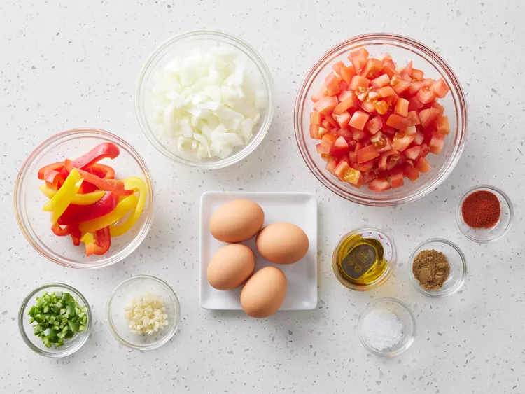
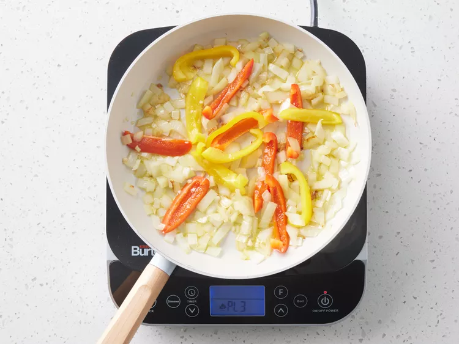
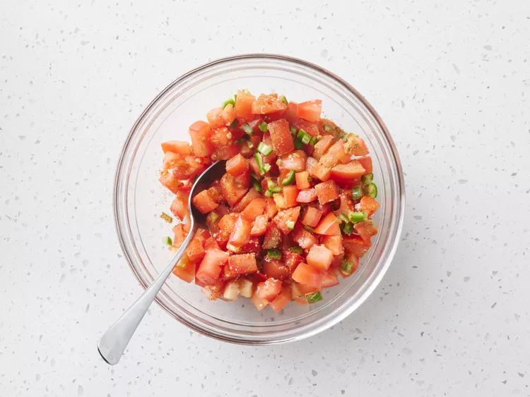
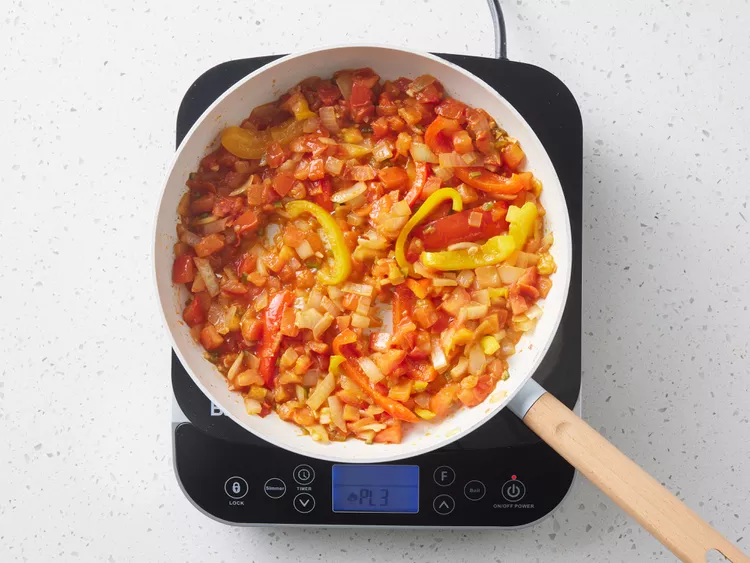

Back to All Recipe Page
Shakshuka~~

Description:
Shakshuka (or shakshouka) is a traditional Tunisian dish featuring poached eggs in a spicy tomato sauce with onions, bell pepper, and garlic. It's usually eaten for breakfast, but I think it makes a tasty lunch or dinner, served with lots of bread to mop up the sauce.
Ingredients:
- 3 tablespoons olive oil
- 4/3 cups chopped onion
- 1 cup thinly sliced bell peppers
- 2 cloves garlic, minced, or to taste
- 5/2 cups chopped tomatoes
- 1 hot chile pepper, seeded and finely chopped, or to taste
- 1 teaspoon ground cumin
- 1 teaspoon paprika
- 1 teapsoon salt
- 4 large eggs
Directions:
- Step 1: Gather all ingredients.

- Step 2: Heat olvie oil in a skillet over medium heat. Stir in onion, bell pepper, and garlic; cook and stir until vegetables have softened and onion has truned translucent, about 5 minutes.

- Step 3: Meahnwhile, mix together tomatoes, chile pepper, cumin, paprika, and salt in a bowl.

- Step 4: Stir tomato mixture into onion mixture. Simmer, uncovered, until tomato juices have cooked off, about 10 minutes.

- Step 5: Make 4 indentations in tomato mixture; crack eggs into indentations. Cover the skillet and cook until eggs are firm but not dry, about 5 minutes.

- Step 6: Ta-da! Server and enjoy!
Credits:
Recipe Credit
Image credits: Dotdash Meredith Food Studios